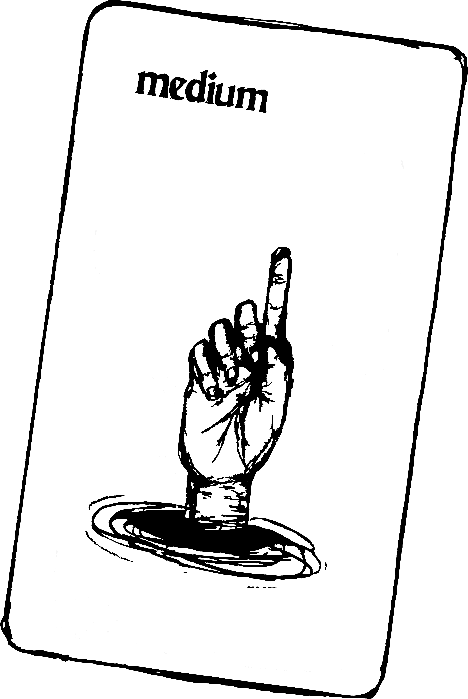
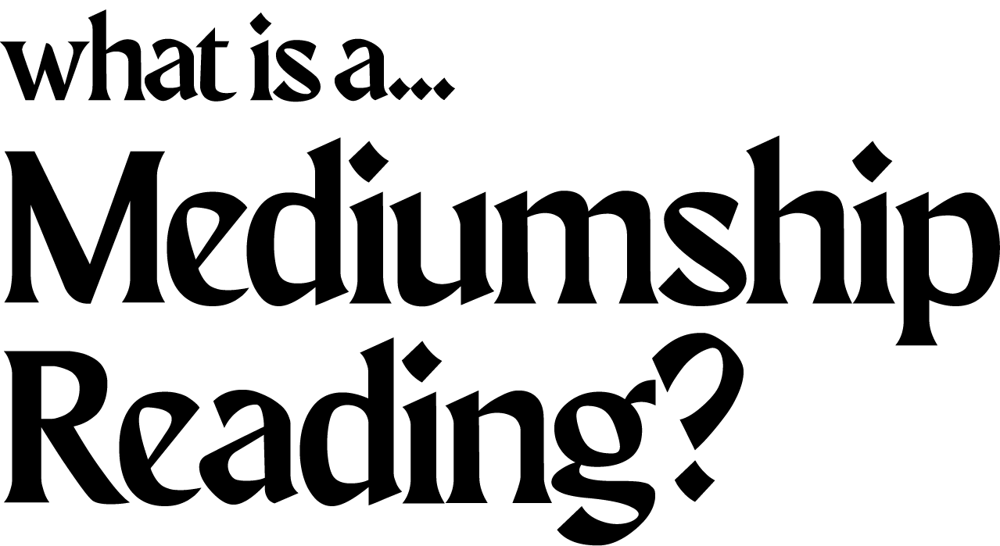

Maybe it’s a teacher you never got to thank, but never fail to think of every time you listen to Joni Mitchell’s “Blue.” Maybe it’s an aunt who had a questionable taste in sweaters, but a commitment to taking your side during the family debates at holiday gatherings. Or maybe it’s a spirit ally you never actually met in this lifetime, but who still likes to drop the occasional feather into your path as a simple way of saying “I’m here; I’m supporting you.”
Whoever it may be, a mediumship reading is a special time and special space for communicating with that friend, loved one, or other energetic being who is currently not living in material-form on the material-earth plane. My process involves me connected with your discarnate through verifiable evidence (that I'm talking to them), essence (of who they were), and story (of their life).
Dynamics, issues, or messages that come through during a traditional psychic reading can come through during a mediumship reading. Both practices involve a psychic and soul-led process for receiving information, however, their purposes are not one and the same.